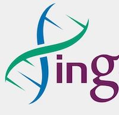

What do we test ?
利用血液等体液进行疾病检测的技术称为液体活检，主要可以检测以下几种疾病:

Why early ?
癌症早筛的意义主要体现在以下几点：

Why choose us ?
我们基于基因组学和生物信息学，通过开发体液RNA微量测序技术和机器学习方法，在体液中发现和鉴定与癌症发生发展相关的新型cfRNA标志物，应用于国内高致死癌症的早期诊断和预后辅助治疗。


我们的使命就是要帮助人们更早期的发现癌症。我们相信，这种使命感以及为此付出的实践和努力，将帮助我们理解和治疗人类疾病，并最终认识和提高我们自己。